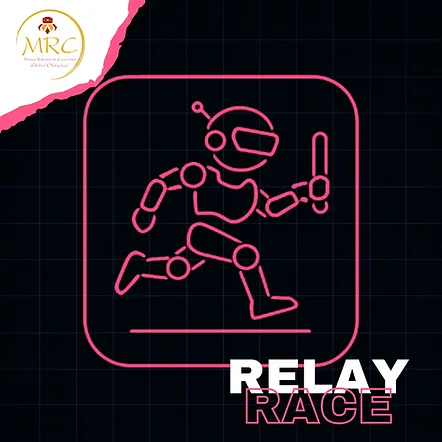
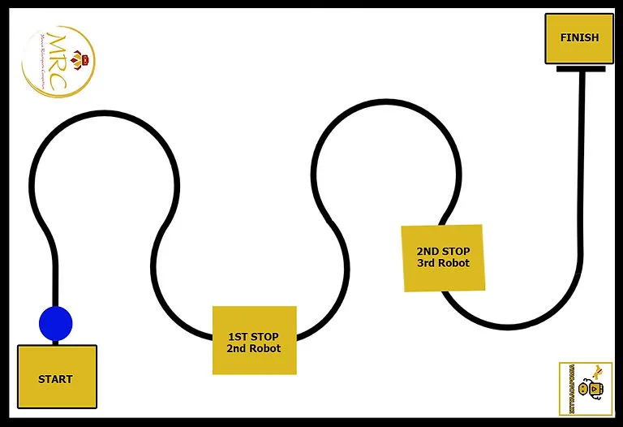
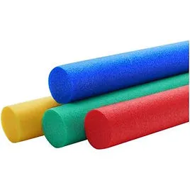

MRC RELAY RACE (接力賽跑)
希臘官方原文規則（English）中文賽事規則
接力賽原始內容
規則內容
接力賽
年齡組別
兒童組 (10至12歲 / 國小)
青少年組 / 青年組 (12歲以上至18歲 / 國中及高中)
⚠️ 本項目僅設一個級別：
所有類型的機器人同場競技。
🚨 各年齡組別分別進行比賽。
⚠️ 第零條規則 – 零容忍原則與常識
在所有運動項目中，均適用第零條規則，其內容如下：
➤「如果您不確定某件事是否被允許，那麼它很可能是不被允許的。」
所有規則皆基於常識、運動精神以及所有參與者的安全。
任何蓄意曲解、違反規則本意，或試圖利用灰色地帶獲取不公平優勢的行為，將不被容忍，並可能導致隊伍被取消比賽資格。
🎯 目標
機器人運動員的目標是在 3 分鐘內自主跟隨賽道白色場地上的黑色線條，將接力棒傳遞給聯盟（每聯盟 2 隊）中的另一台機器人，並以最短的時間完成比賽。
👥 隊伍 – 教練
- 比賽以隊伍為單位參與，而非個人。
- 本項目需要 2 支隊伍相互合作。隊伍應來自同一所學校/機構。每位教練應負責 2 支隊伍，以便參加本項目。
- 每隊可由二 (2) 至三 (3) 名隊員組成。
- 每隊必須指定最多兩 (2) 名機器人運動員技師。
- 僅允許機器人運動員技師進入準備區或比賽場地。其餘隊員必須留在比賽場地內，且不得排隊等候。➤ 換言之，他們不能佔用任何額外的排隊位置。若隊伍未遵守上述規則，將被取消資格。
- 允許隊伍在每次賽道嘗試前更換指定的技師，讓所有隊員都有機會積極參與該項目，但此非強制性。
- 所有隊員必須年滿 10 歲 (相當於國小四年級或以上)。
- 隊伍教練必須年滿 20 歲。
- 為確保比賽順利進行，教練每註冊 3 支隊伍參加比賽，就必須配備 1 名助理。
- 每隊僅允許使用一台機器人。比賽期間不得更換機器人。
- 隊伍之間不得共用同一台機器人。
- 若隊伍的機器人遇到嚴重的技術問題，經主裁判許可後，僅允許更換微控制器或電子元件。
🤖 機器人運動員 – 機器人類別
- 本競賽開放給所有機器人運動員，無論使用何種機器人套件或硬體。
- 也允許自製的機器人運動員參賽。
- 所有機器人運動員在各年齡組別中同場競技。
⚙️ 機器人運動員要求 – 規格
- 機器人運動員必須是自主運作的。這表示它必須在沒有隊伍技師任何協助的情況下偵測並攜帶接力棒。
- 機器人運動員必須有一個夾持器以便抓取接力棒。
- 其最大整體尺寸必須為 寬 35 公分 x 長 35 公分。
- 高度和重量沒有限制。
- 機器人運動員將被秤重，並且必須能舒適地放入檢測箱中。
➤ 檢測箱尺寸為 35 x 35 公分，另有正負二 (2) 公釐的公差。
- 機器人運動員應在不施加壓力的情況下放入檢測箱。
- 機器人運動員必須具備啟動和停止按鈕。
- 機器人運動員不得損壞賽道或以任何方式對觀眾構成威脅。
- 無論機器人類別，僅允許使用 1 個微處理器、4 個馬達和 4 個感測器。
🧪 技術檢查
- 初次技術檢查於比賽當日，在機器人運動員第一次嘗試時進行。
- 在初次檢查期間，將詢問隊伍關於機器人程式的關鍵部分。➤ 隊伍必須打開裝有機器人程式的筆記型電腦。➤ 若從回答中明顯看出隊伍不理解程式，他們將受到相當於其在該項目中所獲時間 +20% 的罰則。
- 技術檢查包括根據上述規格進行的機器人檢查。➤ 若機器人未達要求，將不允許其參賽，並自動取消其在该項目的資格。
- 初次檢查完成後，機器人運動員將被分配一個唯一的 ID 編碼。
- 若隊伍在初次技術檢查時未到場，將導致自動取消比賽資格。
- 在每次嘗試前，助理裁判也會進行二次技術檢查。
- 若在比賽過程中，裁判判定機器人運動員違反或未達規定之規格，裁判有權立即取消其資格。
🏟️ 場地
- 賽道尺寸為 3 公尺 x 3 公尺。
- 線條為黑色，寬度 1.8 公分。
- 線條在任何點都不交叉。
- 線條（軸向）與賽道牆壁邊緣的最小距離為 25 公分。
- 彎道的最小曲線直徑為 10 公分。
- 賽道上沒有直角。
- 在比賽開始前，將有測試回合供機器人運動員進行測試，時間有限，具體時間表將於比賽當日公布。

🏃♂️ 接力棒
- 使用的接力棒為泡棉材質（游泳浮力棒）。
- 形狀為圓柱體。
尺寸：
- 高度：20 公分
- 厚度：6.5 公分

🏆 比賽程序
⏱️ 準備
- 比賽期間，聯盟將以初次技術檢查時主辦單位分配給他們的唯一編號來稱呼。
- 每個聯盟必須為每位機器人運動員配備一名技師（每隊各 1 名技師）。
- 各隊技師將機器人運動員放置在聯盟決定的位置（起點或終點位置）。
- 位於起點位置的機器人運動員必須將其夾持器面向接力棒。
- 位於終點位置的機器人運動員必須將其夾持器面向終點位置前方的藍色圓圈，並等待另一台機器人運動員交付接力棒。
- 接力棒放置在起點位置前方的藍色圓圈中。
🏁 開始 – 比賽流程
- 機器人運動員的技師在裁判鳴哨後，透過按下啟動按鈕來啟動他們的機器人運動員。
➤ 機器人運動員開始運作前，程式中必須包含 5 秒的時間延遲，以便技師離開場地。
- 位於起點位置的機器人運動員必須抓取接力棒，向前移動直到偵測到黑色線條，然後跟隨線條到達終點位置，並在另一台機器人運動員前方的藍色圓圈區域內釋放接力棒。
➤ 接力棒不得在終點區內交付給隊友。持有接力棒的機器人運動員僅允許為了對準目的進入終點區（它必須離開並將接力棒留在藍色圓圈中）。
- 位於終點位置的機器人運動員必須抓取接力棒，向前移動直到偵測到黑色線條，並跟隨線條到達終點區。
- 機器人運動員必須與接力棒一起停在終點區內，該次嘗試才算有效。
➤ 若接力棒在任何機器人運動員行進過程中掉落，該次嘗試視為無效。
🔁 回合 – 嘗試
- 該項目的時間為 2 小時。（此時間可能根據參賽人數延長）。在此期間，每個聯盟將根據組委會公布的順序，在賽道上進行多次嘗試。
- 若輪到技師時其不在場，則該次嘗試視為放棄，由下一位技師遞補。➤ 錯過回合的技師必須等到所有其他嘗試完成後，才能再次輪到。
- 每次嘗試前，機器人運動員必須通過助理裁判進行的二次技術檢查。
- 裁判記錄機器人運動員每次嘗試的分數。
- 每個聯盟有責任確保其在指定時間窗口內進行每次嘗試。
- 在嘗試之間，允許隊伍對其機器人運動員及其程式碼/演算法進行修正，➤ 但不允許進行測試。
❌ 嘗試結束
- 當機器人運動員到達終點方格時。
- 若機器人運動員未完成交接。
- 若機器人運動員掉落接力棒。
- 若接力棒在終點方格之外。
- 若機器人運動員偏離黑色線條。
🟥 隊伍取消資格
在以下情況下，隊伍將被取消比賽資格並必須退出：➤ 隊伍的成績將不予計算，也不會出現在官方比賽排名中。
- 若機器人運動員不符合運動規則中定義的規格，且隊伍拒絕進行必要的調整。
- 若任何技師行為不當或不尊重他人，使用侮辱性語言、挑釁，或對其他參與者或裁判進行口頭（或其他方式）攻擊。
- 若發現機器人運動員並非自主運作，而是透過藍牙、Wi-Fi 或任何類似技術進行遠端控制。
✅ 允許 / ❌ 禁止
✅ 允許：
- 比賽開始後機器人運動員夾持器的伸展。
- 僅使用濕清潔布或清潔液和紙巾清潔機器人運動員的車輪。
❌ 禁止：
- 機器人運動員使用可能傷害其他參賽者的零件或組件。
- 使用黏著劑增加牽引力，包括：
➤ 使用膠帶清潔車輪，可能導致殘留膠。
➤ 使用吸盤。
➤ 任何違反規定的增加附著力方法。
- 與場地接觸的輪胎或機器人部件，必須不能夠舉起並承載標準 A4 紙（80 g/m²）超過兩 (2) 秒鐘。
- 使用氣體（任何形式，例如氣瓶）來提高速度。
- 機器人在比賽中碎裂或散落成碎片。➤ 即使機器人運動員完成比賽，時間也記錄為 180 秒 (0)。
- 透過以下方式將機器人連接到外部電子設備（例如電腦、智慧型手機、平板電腦）：
➤ 藍牙 ➤ Wi-Fi ➤ 任何其他無線技術
- 在任何機器人類別中使用氣動系統。
- 在任何機器人類別中使用回力馬達。
🏆 獲勝者
每個年齡組別的前 3 名獲勝者根據以下條件決定：
- 排名將基於聯盟的最短時間。
- 若所有參賽聯盟都沒有完成賽程，將加賽一輪，最終排名依各聯盟行駛的最長距離決定。
獲勝者將分別為每個年齡組別宣布：
🥇 第一名 🥈 第二名 🥉 第三名